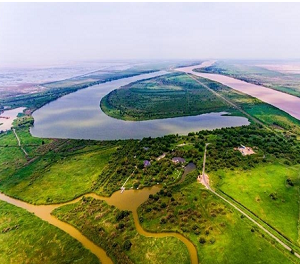
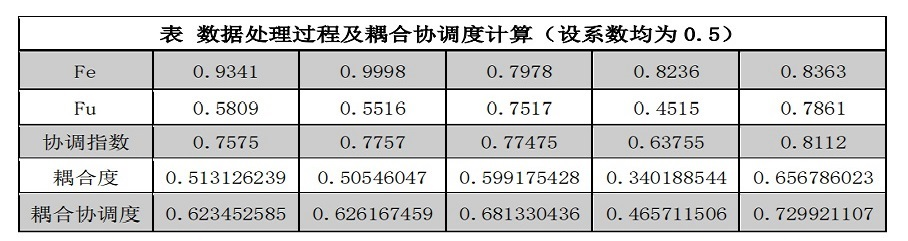
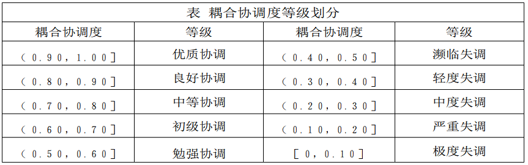
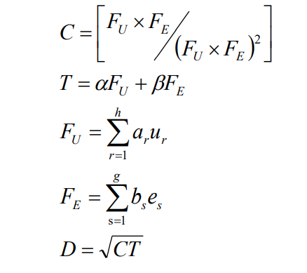
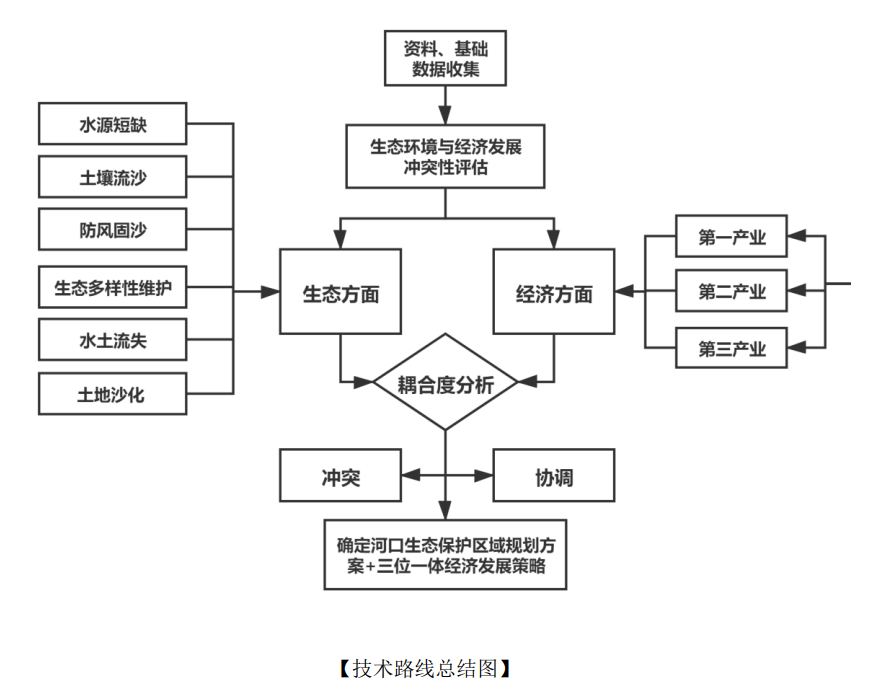

研究背景及目的

黄河河口地区是当今我国温带地区最完整、最广阔、最年轻的湿地生态系统,黄河三角洲是国家级自然保护区。黄河河口地区湿地类型多、面积大、资源潜能巨大,在本地区的经济建设和维持生态平衡方面具有举足轻重的地位。但近年来受工农业生产、油田开发和基础设施建设等人类活动因素的影响，黄河地区出现了湿地水资源减少，生物多样性减少等诸多问题，有的生态破坏接近或者超过了系统的忍耐阈值。但是由于黄河河口地区特殊的地理位置以及具有丰富的自然资源，在经济领域的战略地位不言而喻，所以如何实现黄河河口地区的经济与自然环境的高质量发展已经刻不容缓。
【左图 东营市黄河河口湿地】
本研究项目旨在充分研究黄河河口地区经济发展与生态保护之间的冲突状况，提出生态与经济两者协调发展的策略。团队将通过实地调研，文献整理等方式了解黄河河口地区湿地生态环境保护的现状与经济发展模式现状，通过建立模型评价该地区的经济与生态的耦合协调度和协调度，对生态环境保护与经济高质量发展的协调影响因素进行分析，提出生态环境保护与经济高质量发展的协调策略，从而在保护湿地等生态环境的同时，利用当地的各种资源优势，地理优势以及其他生态优势实现经济的平稳发展。
研究内容
黄河河口地区生态环境保护与经济发展冲突基本情况调研分析
1、分析经济发展需求与先天自然资源的矛盾
河口地区资源丰富,以油田化工开发为主的工业发展和三角洲农、牧、渔业综合开发，前景广阔。该地区是我国世纪经济社会发展极具潜力的地区,对水资源的需求越来越大，根 据有关专家预测, 到2010年黄河口地区一般年份需水总量为28.67亿m3;干旱年份需水总量为31.43亿m3 ;特殊干旱年份需水总量为34.82亿m3,与前10年相比已经翻了3倍。水资源资源不足已成为制约该地区经济社会可持续发展的决定性因素。 本研究将对比黄河河口地区农业、工业、居民生活用水等方面的用水需求和黄河河口地区可支配水资源总量，分析水资源短缺对经济发展的制约影响。
2、分析经济发展需求与脆弱的生态环境的矛盾
（1）农业发展需求与土地的劣质性的矛盾 黄河河口地区是我国重要农业产区。而山东省盐碱地面积有 86 . 67 万多 hm², 其中约 2/3分布在黄河河口地区的东营市和惠民地区。土壤盐碱化严重影响了农作物的生长发育，从而影响作物产量，进而对区域农业生产造成了巨大影响。土地质量的下降导致土地资源日益紧张，土地供需矛盾日益突出，粮食安全和生态环境受到严峻挑战，进而到区域农业生产和经济的可持续发展。土地的劣质性除了土壤富含盐碱外,土地质量差,中等土地的劣质性严重影响了居民日常生活及整个农林牧渔业的发展,在客观上加大了生产、开发及治理的难度与成本。本研究将量化土壤盐碱化程度以及土地质量劣质性指标，分析土地质量下降造成的土地资源紧张以及土地工序矛盾。
（2）可持续经济发展需求与严重水质污染的矛盾 农业生产中农作物的生长发育离不开优质水体的灌溉。 然而，污水灌溉农田中的农作物后则会导致农作物的减产以及影响农作物的质量。农作物的产量和品质下降会直接作用于农产品的市场，导致农作物的销量下降，给农业经济带来冲击。工业废水污染、生活用水污染以及在农业生产过程农田本身排水造成的污染等都是造成农业水质污染的重要原因。同时，工业污水中通常含有高浓度的盐分，高浓度的盐分可以使得植株在短时间 内脱水过多致死，影响农作物的产量。含有工业污染物、有害物质的污染水直接灌溉农田后，进入农田生态系统，首先会破坏农田土壤中的生态平衡，改变土壤的酸碱度，造成土壤肥力下降，破坏其原有的养分和结构，可以使土壤的肥力在几年之内得不到恢复，甚至造成不可逆的损害，农作物的生长环境因此被损坏，引发减产甚至绝收。
（3）黄河河口规划需求与黄河尾闾变动性的矛盾 黄河虽然经过下游800—900 km河道的堆积和水沙的调整作用,但到达河口的泥沙 量仍然十分巨大。大量泥沙集中输送到河口地段,其中除大约1/3入海以外,余下部分堆积在黄河三角洲和滨海地区,导致黄河尾闾循着淤积—延伸—抬高—摆动—改道的自然规律周而复始、循环演变。黄河尾闾始终处于冲淤交替,以淤积为主的状态,黄河尾间的摆动性在很大程度上影响黄河河口的规划、布局与建设。
黄河河口地区生态环境保护与经济发展冲突评价
如下为团队根据各官网数据及统计年鉴运用上述方法计算出的东营市经济与环境发展指标耦合协调度。
参考相关研究成果，依据耦合协调度对生态环境与经济发展的协调程度进行等级划分，见下表。
为评价黄河河口地区生态环境保护与经济发展的冲突程度，通过搜集2016-2020年五年已有数据，进行耦合协调度计算。因耦合协调度等级划分（见表4，耦合协调度等级划分）为（０．９０，１．００］ 优质协调，（０．８０，０．９０］ 良好协调，（ ０．７０，０．８０］ 中等协调，（ ０．６０，０．７０］ 初级协调，（ ０．５０，０．６０］ 勉强协调，由计算出的耦合协调度0.7得出评价：近五年来经济发展与环境的协调程度虽然有所上升，但是仍然处于“中等协调”区间。由此我们认为黄河河口地区的经济与环境发展属于刚刚步入协调，预计未来会向“良好协调”及“优质协调”迈进，而目前的协调发展水平偏低的问题亟待解决，由此我们着手分析其影响因素及协调策略。
国内外发展现状和研究动态
黄河河口地区水资源现状
1、黄河河口地区水资源供需矛盾现状
黄河流域资源性缺水严重,生态敏感脆弱,流域以全国2%的水资源支撑了12%的人口、15%的耕地,资源环境容量严重超载,流域3/4以上区域属于中度以上脆弱区,高于全国55%的平均水平。 根据有关专家预测, 到2010年黄河口地区一般年份需水总量为28.67亿m3;干旱年份需水总量为31.43亿m3 ;特殊干旱年份需水总量为34.82亿m3,与前10年相比已经翻了3倍。但由于近年来黄河流域降水偏少,而用水却增加,实测进入河口地区的水量越来越少 ( 20世纪50年代利津年平均464亿m³,90年代120 亿m³—150亿m³)，导致黄河河口地区水资源供需矛盾愈加尖锐。
2、水资源调配现状及现有成效
山东省最大的跨流域引水工程——引黄济青工程，1984年动工, 1989年11月25日正式建成并通水以来,至今已累积从黄河引水20.2亿m 3。该工程的建成和运行为工程沿线农田，城镇供水,并为沿途补充了地下水源,防止了海水内侵,改善了输水河两岸的自然和生态环境。引黄灌溉在山东省起到了基础设施的作用。鲁西北沿黄地区获得粮棉丰收。20世纪80年代,沿黄的菏泽、聊城、德州、惠民、东营五市地粮食总产已占全省总产的29. 1 % ;棉花总产占全省总产的80. 4% ,向国家交售商品粮850万t,棉花850万t,年均灌溉净效益8.5亿元。近年来,鲁西北沿黄地区粮棉持续丰收,到处是一派欣欣向荣的景象,灌溉引水年净增效益达 30亿元。
黄河河口地区生态脆弱性
1、土地劣质性对农业发展的制约情况
黄河三角洲地区是我国重要农业产区, 土壤盐碱化严重影响了农作物的生长发育, 从而影响作物产量, 进而对区域农业生产造成了巨大影响。土地质量的下降导致土地资源日益紧张, 土地供需矛盾日益突出, 粮食安全和生态环境受到严峻挑战, 进而影响到区域农业生产和经济的可持续发展。目前，全区不同程度的盐碱地占土地总面积的3/4以 上，其中中度及以上的盐碱荒地约44×104 hm2，占全区土地总面积的56.2%。此外，土地质量差,中、低产田面积占到耕地面积的80 % — 90 %。在天然草地中,品质优良的一等草场面积小到可以忽略不计;二等草场面积也仅占1 /3左右; 而三、四、五等草场面积占到60 %以上,特别是草质低劣的五等草场面积占到36,2 %。在荒地资源中,一类宜农地只占0.03 % ；而三、四类宜农地却占到3/ 4 以上。
2、水体污染现状及其对农业发展的影响
据环保部门监测,在蔬菜保护地栽培集中地区, 浅层地下水中硝态氮和亚硝态氮检出率高达67%以上;由于蔬菜保护地栽培农药使用量过大, 再加之农民喷洒完农药之后在沟渠里洗刷药械, 随手丢弃农药包装瓶, 使水体受到污染 。因此黄河河口地区浅层地下水中有机磷农药检出率达45 %以上。 然而据统计,在黄河三角洲地区, 污水灌溉面积约占耕地总面积的10%，导致农作物的产量和质量下降，同时农作物的产量和品质下降会直接作用于农产品的市场，导致农作物的销量下降，给农业经济带来冲击。 另外研究表明，环境中的污染物对农业、工业、人类构成了危害。用污染的水浇地，会使耕地板结和碱化，影响农作物生长，使农作物产量和品质降低。污染的水进入工厂会导致产品质量或产量下降，甚至损害生产设备，导致停产。污染物进入水体，能够破坏水源，威胁用水安全，不适宜饮用的河段和水井增加，使得居民生活用水困难。
3、黄河尾闾摆动的人为原因及影响
黄河虽然经过下游800—900 km河道的堆积和水沙的调整作用,但到达河口的泥沙 量仍然十分巨大。根据利津站1950—1985年实测资料,多年平均泥沙量、水量和含沙量分别为10.6亿t、417m³和25.4kg/m³。根据 1950年7月—2010年6月利津水文站实测资料统计，进入河口地区多年平均水量、沙量分别为307.9亿m3、7.44 亿t，平均含沙量为24.2 kg/m3。淤积主要发生在黄河入海口的沙嘴处。黄河入海流路按照淤积→延伸→抬4→摆动→改道的规律不断演变，使黄河三角洲陆地面积不断扩大，海岸线不断向海推进。 而黄河河道变迁深刻影响黄河三角洲湿地演变,流路改变不仅致使黄河三角洲岸线和面积发生动态变化,更导致湿地的水沙条件、地形地貌、土壤养分盐分等生境条件发生变化,对黄河三角洲湿地演化过程以及黄河河口生态规划产生深刻影响。
项目特色
宏观分析与微观建模相结合

宏观上采用PESTEL分析:PESTEL分析模型又称大环境分析，是分析宏观环境的有效工具，不仅能够分析外部环境，而且能够识别一切对组织有冲击作用的力量。它是调查组织外部影响因素的方法，其每一个字母代表一个因素，可以分为6大因素：政治因素(Political)、经济因素(Economic)、社会文化因素(Sociocultural)、技术因素（Technological）、环境因素(Environmental)和法律因素(Legal)。
微观上建立环境与经济耦合协调度模型——生态环境与经济发展交互耦合模型 耦合是指两个或两个以上系统相互影响的一种现象，耦合协调度则是对这种相互影响程度的度量。在现实生活中存在着许多系统耦合现象，耦合模型广泛应用于自然系统和社会系统等领域的研究。(如右图所示)
将视角聚焦于协调生态与经济之上，更具综合性及宏观性
我们提出的“三位一体”是指:黄河河口地区以现代农业及其农业产业化工程体系，以石油及石油化工、海洋化工为主体的工业产业体系,以港口、旅游业为主体的现代服务业体系，第一产业、第二产业、第三产业组成“三位一体”的产业设置格局。
在恢复、保护、建设生态环境的基础上,在不破坏或不影响生态环境的情况下,大力发展无公害农业、绿色农业，限制发展高耗水行业,支持企业实施节水技术改造，提高工业用水重复利用率，使有限的黄河水资源发挥最大的经济和社会效益。大力发展生态旅游业，充分利用黄河入海口地区尚未利用土地和广阔的浅海区域。按照发展大旅游、开发大市场、建设大产业的要求,加强旅游基础设施建设，推动旅游资源整合。
技术路线

拟解决的问题及预期成果
拟解决的问题
（1）生态环境保护与经济发展的冲突评价模型构建。环境保护与经济发展的冲突评价模型构建，宏观上采用PESTEL分析，微观上建立环境与经济耦合协调度模型——生态环境与经济发展交互耦合模型，通过构建模型来揭示生态环境与经济发展之间的关系。
（2）生态环境保护和经济发展的协调影响因素分析与协调策略建议。生态环境保护和经济发展的协调影响因素分析与协调策略建议。分析经济发展需求与脆弱的生态环境的矛盾，如农业发展需求与土地的劣质性的矛盾等；并通过研究冲突协调政策，如减少生态环境和经济发展各子系统发展差距，提出协调策略建议。
项目研究预期成果
（（1）完成一篇有关黄河河口地区经济发展与生态环境保护冲突与协调的论文。论文的主要内容有：基于此研究背景，以当地生态系统的特点与现状及不同地区的经济发展模式为研究对象，分析团队所收集的资料中有用的信息，提出协调黄河河口生态环境保护和经济发展的策略，并对这些策略的优劣做一个科学的评估，利用已有知识和调查数据对这些协调策略进行总结和升华，搭配出更合理、科学、实用的协调策略。论文预期要达到的效果：一、以团队成员掌握黄河河口地区经济高质量发展与生态环境保护冲突程度为基础，通过发表论文为促进黄河河口地区健康可持续发展，提供决策借鉴。
（2）在对河口地区生态现状和不同经济发展模式进行实地调研，网络数据分析等途径收集相关信息及资料后，通过对数据和资料的分析和讨论，首先总结出现已有的较好的协调两者冲突的处理方法和管理策略，其次结合团队成员已有的相关知识，分析现有的协调策略中所存在的问题和风险，针对河口地区已有协调政策的不合理之处给出合理的调整意见。
（3）在校内开展一次运用小程序或者网页的研究成果公开展示。基于调查结果，制作展板，向校内大学生展示目前河口地区经济发展与生态环境保护协调现状，借此引起他们对河口地区经济发展与生态环境保护的关注，并设立集思广益知识点，收集广大学生对两者冲突的协调策略的意见和想法。
（4）通过此项课题，最终使人们对经济发展需求与脆弱的生态环境的矛盾有全面的了解，并为促进黄河河口地区健康可持续发展，向相关机构提供决策借鉴。同时，全面系统的实地调查和详细周密的分析可实现经济与生态环境发展模式的创新,以减轻经济发展对环境的压力，并通过合理的生态资源开发运用，促进经济产业系统与生态环境的良性互动发展。